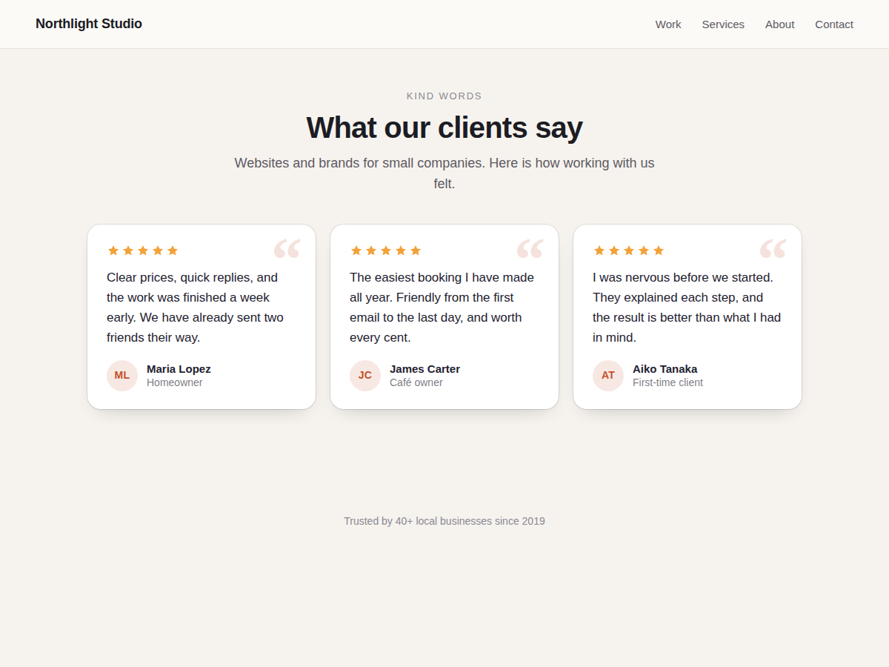

Kudoline
Testimonial slider and grid with star ratings
- Slider or grid of quotes with names and stars
- Looks finished before you change a thing
- Your colours, corners and font in the editor
- Every quote is plain text search engines read

What it does
Visitors trust what your customers say more than anything you write about yourself. Kudoline puts those words on any page of your site as a clean slider or a grid of cards, each with the quote, the person's name, their role or town, and a star rating.
It looks finished the moment you add it: white cards, soft shadows, a quiet quote mark and initials in a circle. On a computer three cards sit side by side; on a phone one card fills the width, the next one peeks in, and visitors swipe or tap the arrows. The slider can move on by itself, and it stops while someone is reading.
Click the widget in the editor, open Settings and type or paste each testimonial. Choose stars from one to five, or none. Pick the card, text, accent and star colours, the corners and your font. The editor shows every change at once.
Every quote is plain text in your page, including the ones off screen, so search engines and screen readers can read all of it. The script is small and loads after the page.
The free plan gives you 5 testimonials with no branding. Premium adds up to 40, customer photos, a masonry wall, a moving row, a rating summary above the quotes, and review schema markup for search engines.
Price
Free
- Up to 5 testimonials per widget
- Slider or grid, stars, initials
- Colours, corners, font, auto-slide
- No branding on your site
Premium
$5/month, $48/year ($4/month billed yearly)
- Up to 40 testimonials per widget
- Customer photos
- Masonry wall and moving row layouts
- Rating summary and review schema